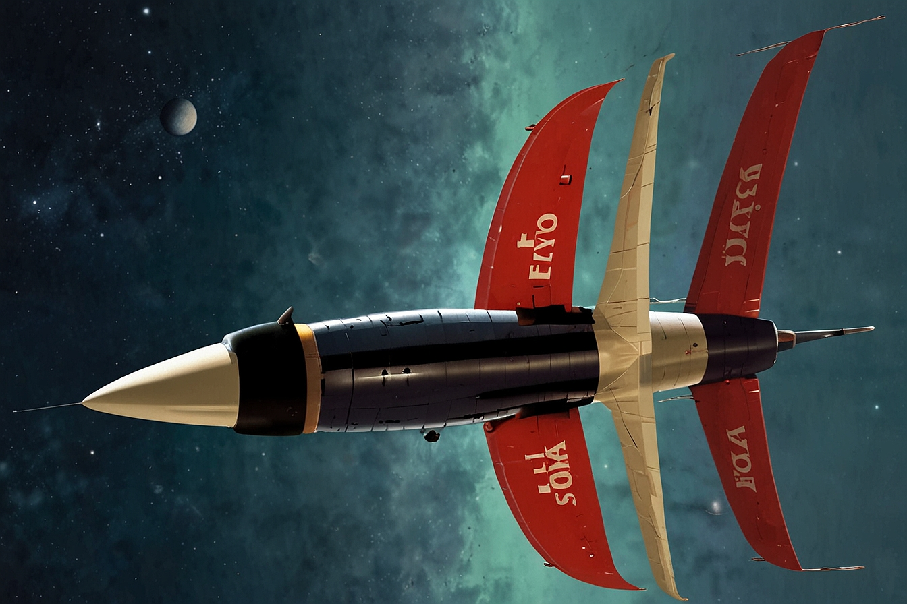
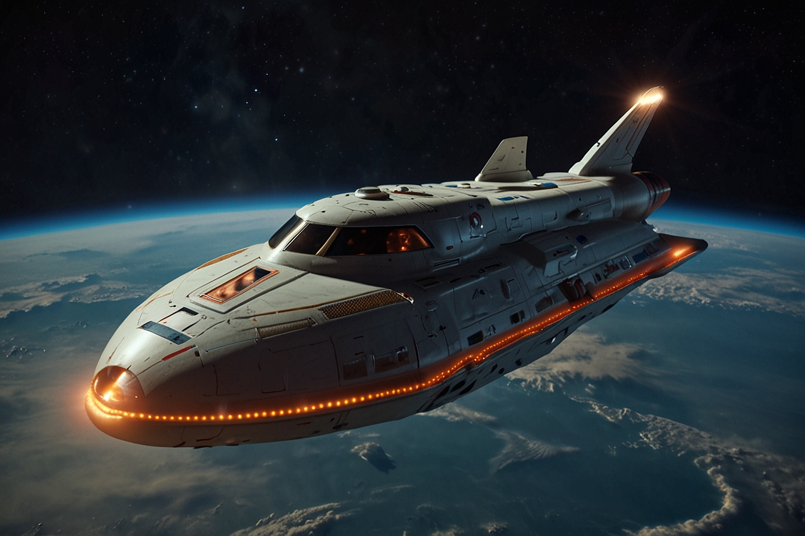
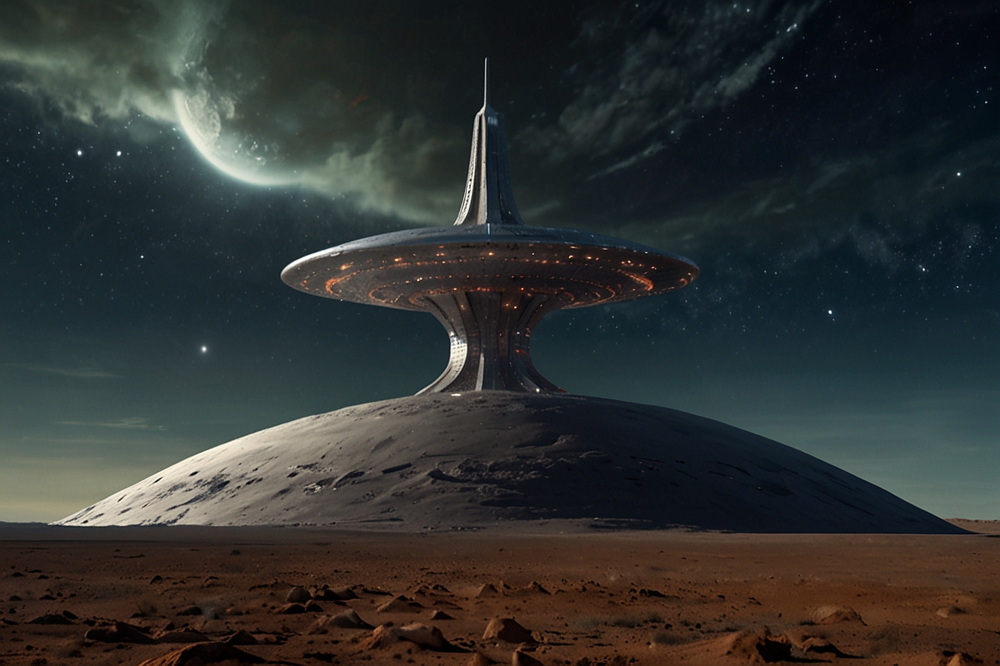
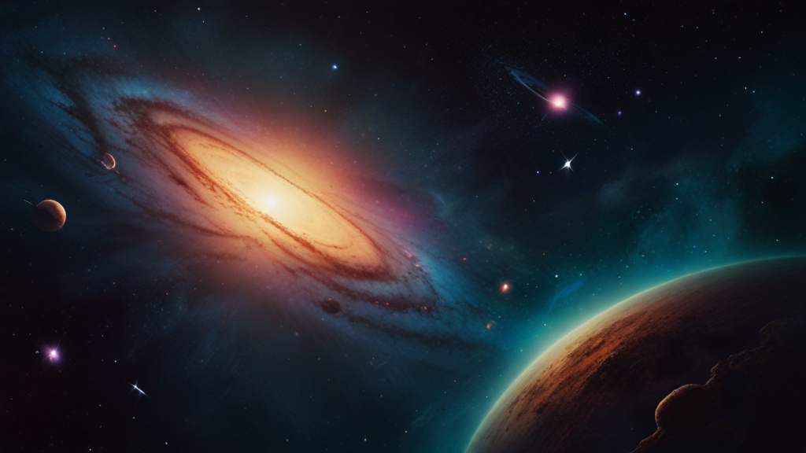

| Nombre: | Lugares: | Completada: |
|---|---|---|
| MH42-Z | Luna Fobos | Sí |
| LO12-A | Luna Deimos | Sí |
| HQ91-D | Luna Europa | Sí |
| BV57-C | Luna Calisto | Sí |
| XD33-X | Luna de la Tierra | No |
Novaursia podría enviar misiones para explorar planetas y lunas en sistemas estelares distantes. Estas misiones podrían incluir el estudio de la geología, la biología y la atmósfera de los planetas, así como la búsqueda de signos de vida extraterrestre.
Novaursia podría enviar misiones para buscar recursos naturales y fuentes de energía en otros planetas y asteroides. Estas misiones podrían contribuir a la expansión de los recursos de Novaursia y a la investigación de nuevas formas de energía sostenible.
Novaursia podría enviar misiones diplomáticas y de contacto para interactuar con otras civilizaciones extraterrestres en la galaxia. Estas misiones podrían incluir intercambios culturales, negociaciones comerciales y tratados de cooperación intergaláctica.
Novaursia podría llevar a cabo misiones científicas avanzadas para estudiar fenómenos cósmicos, como agujeros negros, estrellas de neutrones y galaxias distantes. Estas misiones podrían contribuir al conocimiento del universo y al avance de la ciencia en Novaursia.
Novaursia podría investigar agujeros de gusano y desarrollar tecnologías para viajar a través de dimensiones alternativas. Estas misiones podrían abrir nuevas fronteras en la exploración espacial y expandir los límites del conocimiento humano.
Novaursia podría enviar misiones para colonizar sistemas estelares distantes, estableciendo colonias espaciales y bases de operaciones en nuevos mundos. Estas misiones podrían contribuir a la expansión y diversificación de la población de Novaursia en la galaxia.